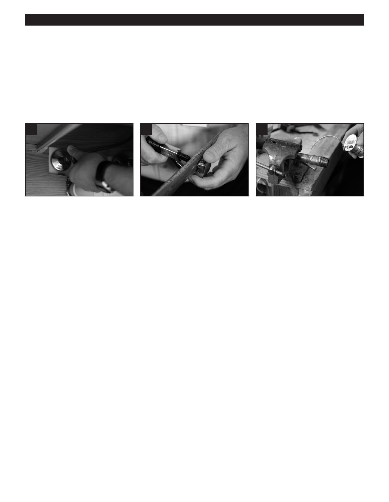

PA RT I C I PA N T R E S O U R C E G U I D E
Fixing Leaky, Frozen, or Burst Pipes (continued)
How to Fix Leaks in Pipes
Leaks not only waste water, but they can damage a building and lead to mold and mildew problems. You need to identify and
fix them right away.
Here’s how to fix a leak:
1. Identify the source of the leak.
2
5
7
2. Shut off the water to the pipe.
5. Cut a new section of pipe of the
7. Solder (copper) or glue (plastic)
3. Remove the bad section of pipe.
same material and diameter.
the fittings to the new section
(Or re-solder the fittings, if it’s
6. Make sure the new section fits
of pipe.
copper pipe.)
snugly in place.
8. Wait for the pipe to cool or the
4. Get new fittings to fit on either end
glue to set.
of the section under repair. (Fittings
9. Turn on the water and check
should be of the same material and
for leaks.
diameter as the existing pipe.)
How to Deal with Frozen Pipes
If water inside the pipes freezes, the flow of water may be blocked and there is a risk of burst pipes. To deal with frozen pipes:
1. Identify the section of pipe that is frozen.
2. Heat the pipe with a hair dryer or heat gun. Do not overheat.
3. Insulate the pipe with neoprene pipe insulation, or use fiberglass insulation held in place with waterproof tape.
19